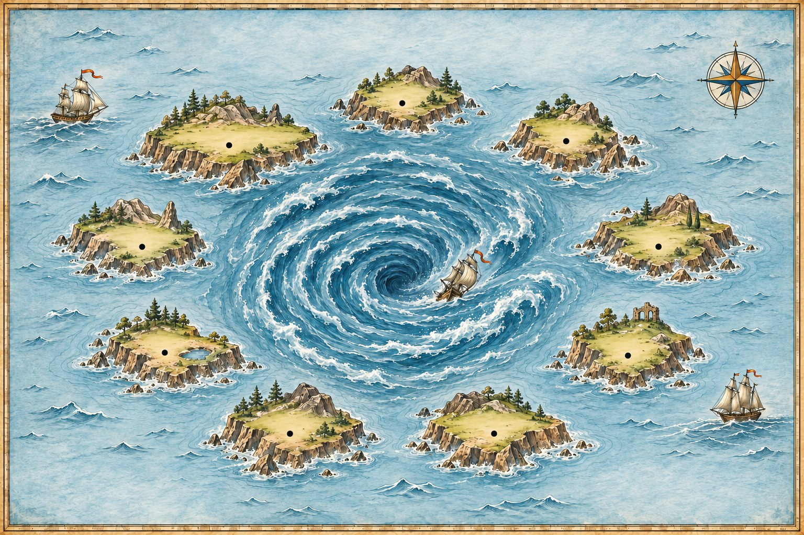

The Inversion Maelstrom
Start a sentence with never, rarely or not only and something strange happens: the sentence turns round like a question. I have never seen becomes Never have I seen. On this chart the nine rocks that cause it ring a whirlpool. Sail past a rock, and the auxiliary spins round.
Read the chartRock first, then the spin
Inversion is formal and dramatic: speeches, stories, essays, news. The everyday sentence is always correct too; the spun one adds weight.
Swap the auxiliary and the subject
After the rock, the word order is a question's: auxiliary, then subject, then the rest.
No auxiliary? do appears
In the present simple and past simple there is nothing to spin, so do, does or did comes up from the deep.
Be spins on its own
With am, is, are, was, were as the main verb, be itself moves.
No sooner … than, Hardly … when
One thing happened straight after another. Past perfect after the rock, then than or when.
Not only … but also
Spin the first half only. The second half keeps normal order.
Rules and warnings
Under no circumstances, On no account, At no time: the formal way to say never.
The nine rocks
Each everyday sentence on the left means the same as the spun one on the right.
| Rock | Everyday order | After the maelstrom |
|---|---|---|
| Never | I have never seen a whale. | Never have I seen a whale. |
| Rarely | We rarely sail at night. | Rarely do we sail at night. |
| Seldom | The port is seldom so quiet. | Seldom is the port so quiet. |
| Hardly | We had hardly left when it rained. | Hardly had we left when it rained. |
| No sooner | We had no sooner left than it rained. | No sooner had we left than it rained. |
| Little | They didn't know the danger at all. | Little did they know the danger. |
| Not only | It not only rained, it also snowed. | Not only did it rain, it also snowed. |
| Only then | I only saw the rocks then. | Only then did I see the rocks. |
| Under no circumstances | You must not swim, whatever happens. | Under no circumstances should you swim. |
Only and not until: the spin comes later
With Only when, Only after, Only if and Not until the rock is a whole clause. The spin waits until that clause is finished, then happens in the main clause.
One clause, then the spin
The first clause keeps normal order. The auxiliary spins in the second.
| Rock | First clause (normal) | Main clause (spun) |
|---|---|---|
| Only when | Only when the fog lifted | did we see the coast. |
| Only after | Only after the storm passed | could we leave the harbour. |
| Only if | Only if the wind drops | will the ferry sail. |
| Not until | Not until we reached land | did we feel safe. |
Only when the fog lifted did we see the coast.
Spin or no spin?
The rock has to be at the very start of the sentence, and it has to limit or deny the whole sentence.
| Sentence | Spin? | Why |
|---|---|---|
| Never have I been so cold. | yes | the rock opens the sentence |
| I have never been so cold. | no | the rock is in the middle |
| Only Tom knew the way. | no | only limits the subject, Tom |
| Only then did Tom know the way. | yes | only then limits the whole sentence |
| Hardly anyone came. | no | hardly limits anyone, the subject |
Little did they know what lay ahead.
Read the chart
Click a rock and its line lights up below; click the whirlpool for the rule. Switch the chart to see each rock spin the start of a sentence, then a whole sentence: the auxiliary always lands in front of the subject.

Drag the chart sideways to reach the eastern rocks.
One-word rocks
Longer rocks
The whirlpool
Caught in the current
Most mistakes forget the spin, forget do, or pair the wrong words.
| Not this | This | Why |
|---|---|---|
| Never I have seen such a storm. | Never have I seen such a storm. | spin the auxiliary |
| Rarely we sail at night. | Rarely do we sail at night. | no auxiliary: do appears |
| Not only she sings, but she also dances. | Not only does she sing, but she also dances. | does, and sing without -s |
| No sooner had we left when it rained. | No sooner had we left than it rained. | no sooner takes than |
| Hardly had we left than it rained. | Hardly had we left when it rained. | hardly takes when |
| Only when the fog lifted we saw the coast. | Only when the fog lifted did we see the coast. | spin the main clause |
After do, does, did the main verb goes back to its base form: did we see, never did we saw.
Signal words
These rocks spin
- Never, Rarely, Seldom
- Hardly … when, Scarcely … when
- No sooner … than
- Little (meaning not at all)
- Not only … but also
- Only then, Only when, Not until
- Under no circumstances, On no account
These do not
- the rock in the middle: I have never seen
- Only + the subject: Only Tom knew
- Hardly anyone, Never mind
- everyday speech: I've never seen that!
- Not long ago, Not far away (time and place, not denial)
One test: can you put the rock in front and make the rest a question (have I seen? do we sail?)? Then spin it.